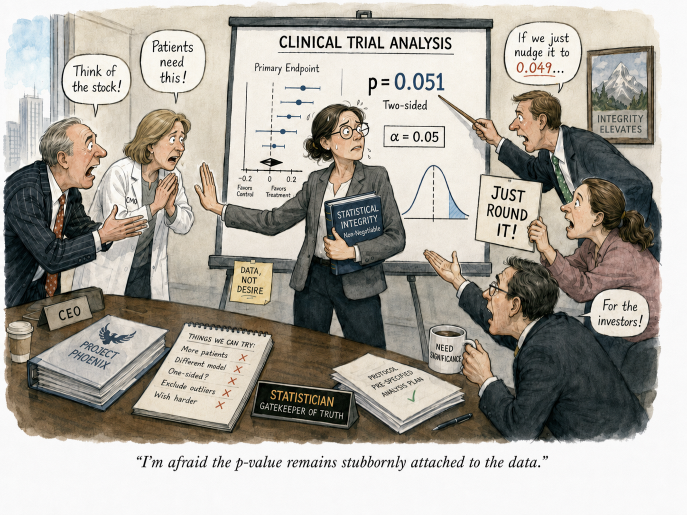

Opinion · Research Integrity
The last line of defense


Nine patients turned a failed Phase 3 trial into a positive one. FDA claims that the integrity of the trial was compromised.
In April, the FDA moved to withdraw approval of a drug it had cleared in 2021, after concluding that the Phase 3 data supporting that approval had been altered. The sponsor is contesting it, and the drug remains on the market pending a hearing. I've linked the FDA's letter below; it's a surprisingly gripping read. In short, after the database was locked and treatment assignments were known, nine patients were selected for re-adjudication. Before those changes, the prespecified analysis was not statistically significant (p = 0.1025); after them, it was (p = 0.0132).
It's possible each of those patients was genuinely misclassified under the protocol. The independent adjudication committee may have believed it was simply correcting errors.
But the committee did not choose the nine patients.
Unblinded sponsor personnel did. And the selection ran in only one direction: the cases that could push the result toward significance were sent back for review, while the cases that could only move it the other way were left untouched. Once the choice of which patients to re-adjudicate is made after unblinding, by people who can see which way each one cuts, the adjudication is no longer independent.
That is the line that cannot be crossed.
The CMO may have convinced himself this was legitimate quality control. The statistician may have felt enormous pressure to find the patients who could turn the result around. We do not know what was said behind closed doors.
But statisticians are often the last line of defense between intense commercial pressure and the integrity of the data.
This is not a new problem. In a 2018 survey of U.S. consulting biostatisticians (Wang, Yan & Katz, Annals of Internal Medicine):
- 24%had been asked to remove or alter observations to support a hypothesis.
- 7%had been asked to change data to achieve a desired outcome.
- 3%had been explicitly asked to falsify statistical significance.
I have faced this pressure myself, particularly in Phase 2 trials where the data is going not to FDA but to investors. I have been called "rigid" for refusing to change data or analyses after the results were known. Over time I found a way to make the point without a lecture on the central limit theorem or a sermon on research integrity.
Now I use simulations and graphs to show how random variation works, how easily a p-value can move, and how quickly the false-positive rate climbs once we start changing the rules after seeing the answer.
A statistician's job is not to find the analysis that produces p < 0.05. Our job is to protect the integrity of the analysis when everyone else desperately wants p < 0.05.